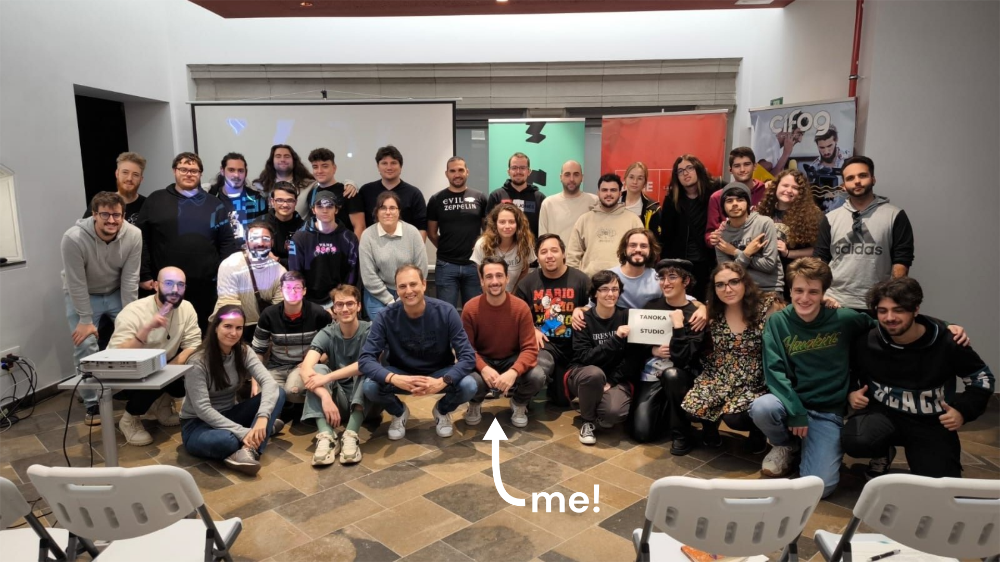

Gameplay Designer:
The core game loop is based around short levels, or shootouts, in which the player must shoot down all targets while avoiding enemy bullets by moving horizontally.
However, each level has a distinct twist to the setting and mechanics, which urges the player to adapt differently to every situation. For instance, perhaps in another world
the main character had a glass-eye, making it only possible to see one half of the screen.
Writer & Narrative Designer:
Humour is a key aspect of the game. Before each duel, the player is presented with a hypothetical alternate reality by an omniscient narrator.
Following this, there is a brief exchange between one of the enemies and the main character, which exposes the comical conflict that provokes the ensuing duel or shootout.
Sound Designer:
Since the game is based on a western, immersion through sound is crucial.
During the shootout, environmental sounds create a tense and intimidating setting, which is heightened by the many gunshots and grunts.
On the other hand, during the exposition of each scenario and level the tone is more light-hearted.
Facts & Accolades
This was our entry for the GameJam Girona 2023,
with the theme "Parallel Worlds" (CAT: "Móns paral·lels"). There are plans to improve and update the game with everything we couldn't develop during the jam.

Development Time: Two days.
Inspiration
Gameplay: Duck Hunt (Nintendo, 1984)
Setting: Red Dead Redemption 2 - "A Quiet Time" (Rockstar Games, 2018)